Clock
telling-time · telling-time-1-usage-scene-1
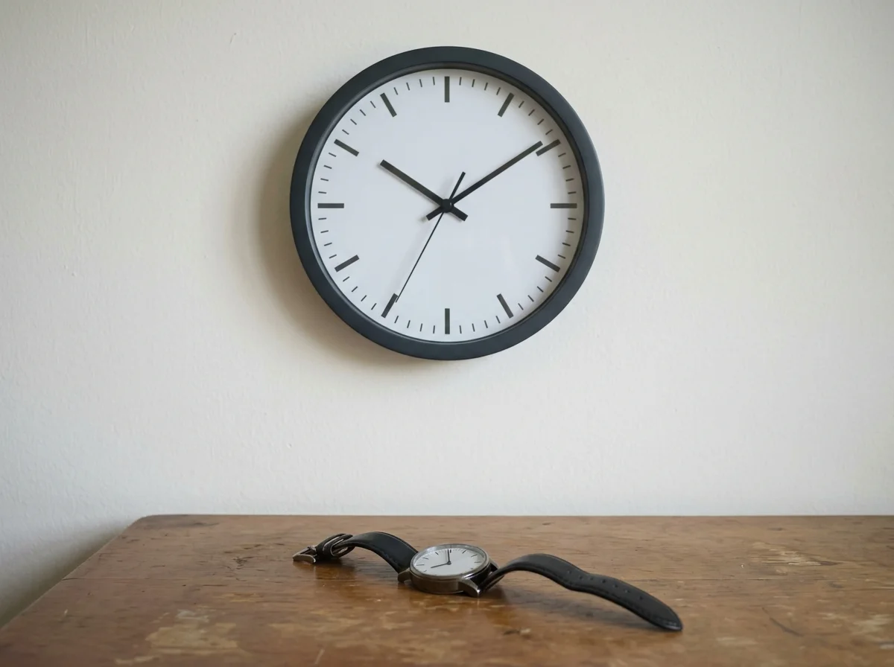
A plain round wall clock with tick marks hangs on a light wall beside an unworn wristwatch resting on a wooden table.
Open full image: ClockComplete reviewed batch covering telling-time (17 scenes) and days-months (17 scenes). Generated with gemini-nano-banana-2.1 in native 4:3 1K (1200×896). Framings preserved; R2 and mappings remain read-only.
telling-time · telling-time-1-usage-scene-1

A plain round wall clock with tick marks hangs on a light wall beside an unworn wristwatch resting on a wooden table.
Open full image: Clocktelling-time · telling-time-1-usage-scene-2
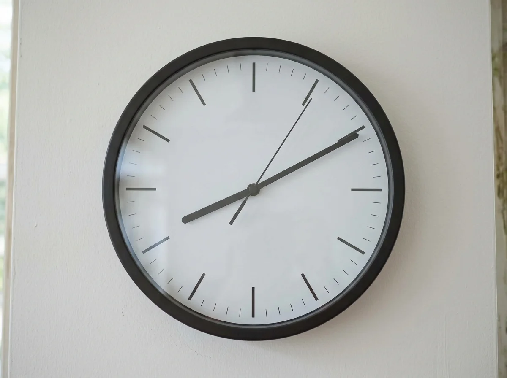
An analogue clock face with tick marks shows a shorter hour hand and a longer minute hand pointing upward, with a thin second hand.
Open full image: Minute Handtelling-time · telling-time-1-usage-scene-3
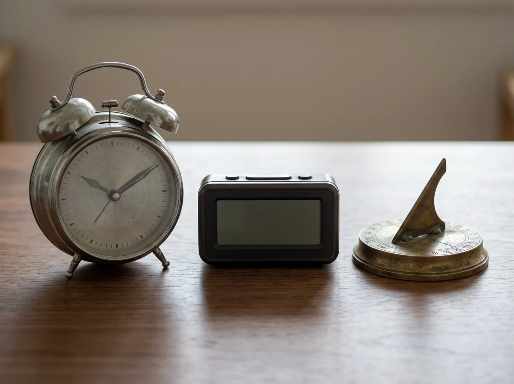
A classic twin-bell analogue alarm clock rests on a surface beside an unlit digital clock display and a small sundial model.
Open full image: Alarm Clocktelling-time · telling-time-1-usage-scene-4
A glass hourglass with fine sand flowing from the upper chamber through a narrow neck into the lower chamber.
Open full image: Hourglasstelling-time · telling-time-1-usage-scene-5
An unlabelled analogue wall clock with tick marks hangs in an office meeting room above a conference table with a folder.
Open full image: Hourtelling-time · telling-time-2-usage-scene-1
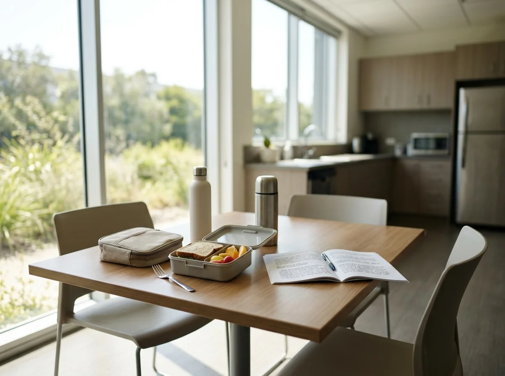
Bright midday sunlight illuminates a park path with very short shadows cast directly beneath trees.
Open full image: Noontelling-time · telling-time-2-usage-scene-2
Warm twilight colors streak the evening sky as the sun dips below the horizon over a quiet urban skyline.
Open full image: Dusktelling-time · telling-time-2-usage-scene-3
An analogue clock face with tick marks shows the minute hand pointing directly down to the six and the hour hand halfway between numerals.
Open full image: Half Pasttelling-time · telling-time-2-usage-scene-4
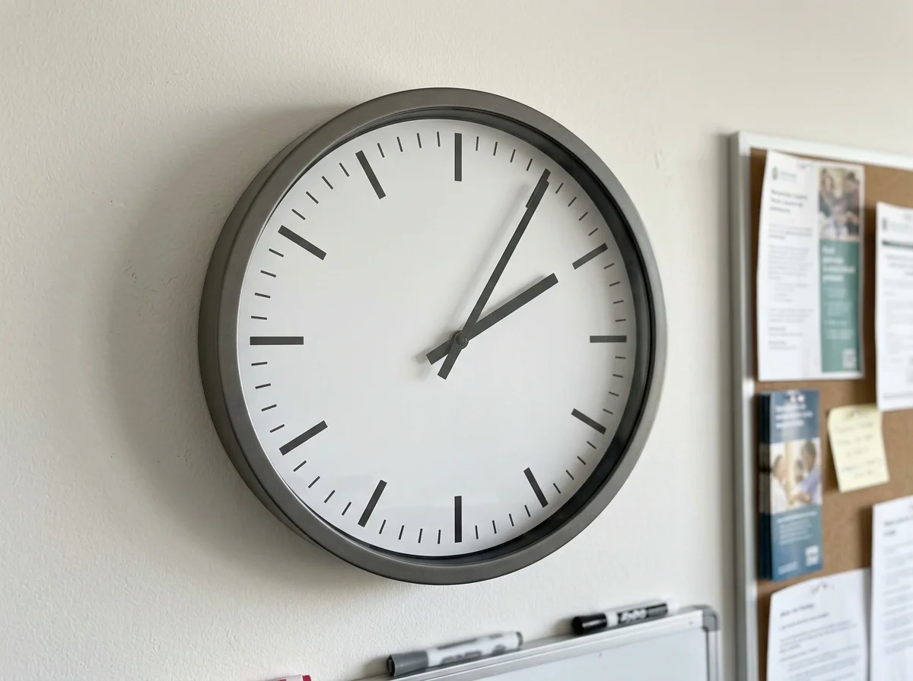
An analogue clock face with tick marks shows the minute hand pointing slightly past the top at the one position.
Open full image: Five Pasttelling-time · telling-time-2-usage-scene-5
An analogue clock face with tick marks shows the minute hand pointing at the eleven position, five minutes before the hour.
Open full image: Five Totelling-time · telling-time-3-usage-scene-1
Early morning sunlight streams through a window onto an office desk with a warm cup of coffee and a daily notebook.
Open full image: Morningtelling-time · telling-time-3-usage-scene-2
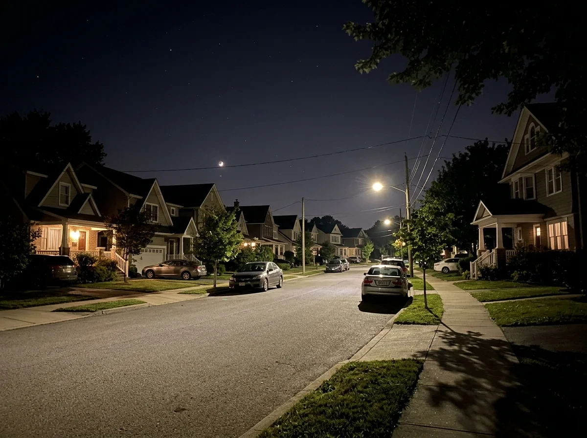
A calm nighttime city scene with stars and a dark sky visible through a wide window beside a dimly lit desk lamp.
Open full image: Nighttelling-time · telling-time-3-usage-scene-3
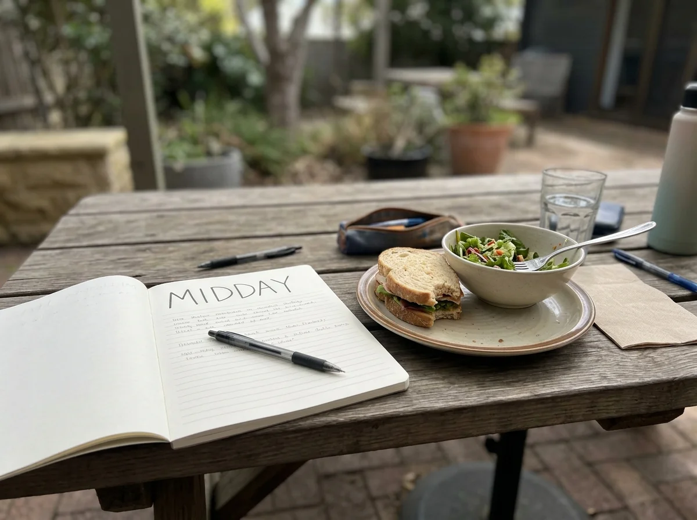
Direct overhead natural sunlight casts minimal shadows on an open courtyard with benches.
Open full image: Middaytelling-time · telling-time-3-usage-scene-4
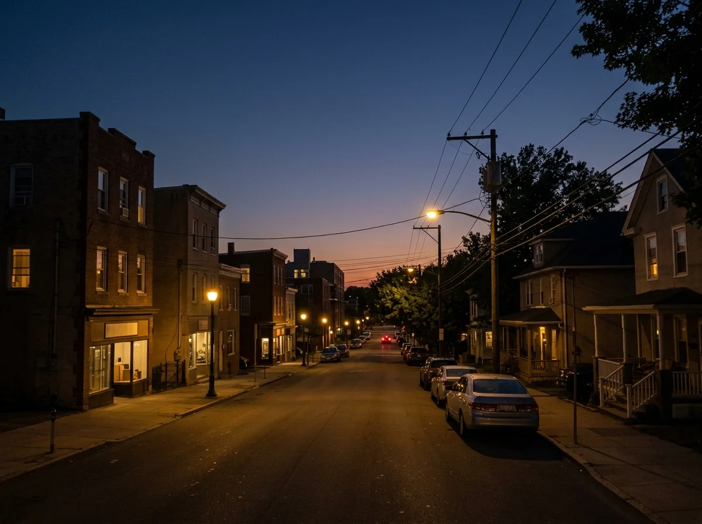
Deep evening blue settles into night over a quiet town street as streetlights begin to illuminate the road.
Open full image: Nightfalltelling-time · telling-time-3-usage-scene-5
A commuter train rests precisely at the station platform beside a platform clock.
Open full image: On Timetelling-time · telling-time-4-usage-scene-1
An airport departure lounge with tidy seating and boarding gate displays before passengers arrive.
Open full image: Ahead of Timetelling-time · telling-time-4-usage-scene-2
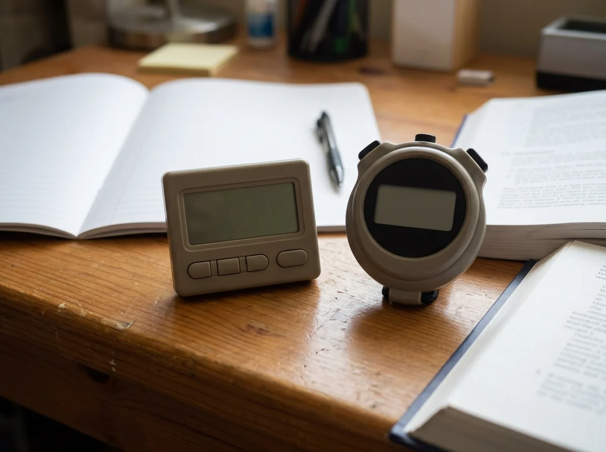
A digital countdown timer display on a table beside project blueprints, counting down remaining minutes.
Open full image: Countdowndays-months · days-months-1-usage-scene-1
A neat office desk with a weekly planner binder and a freshly opened project folder for the start of the week.
Open full image: Mondaydays-months · days-months-1-usage-scene-2
An office workstation with documents, a notebook with notes, and an open desk calendar showing midweek progress.
Open full image: Thursdaydays-months · days-months-1-usage-scene-3
A calm home setting with an unlabelled weekly planner beside a packed work bag resting near an armchair.
Open full image: Sundaydays-months · days-months-1-usage-scene-4
A pair of walking shoes, a book, and keys resting on a side table on a relaxing leisure morning.
Open full image: Day Offdays-months · days-months-1-usage-scene-5
A desk calendar opened to early spring with a potted budding plant and soft natural window light.
Open full image: Marchdays-months · days-months-2-usage-scene-1
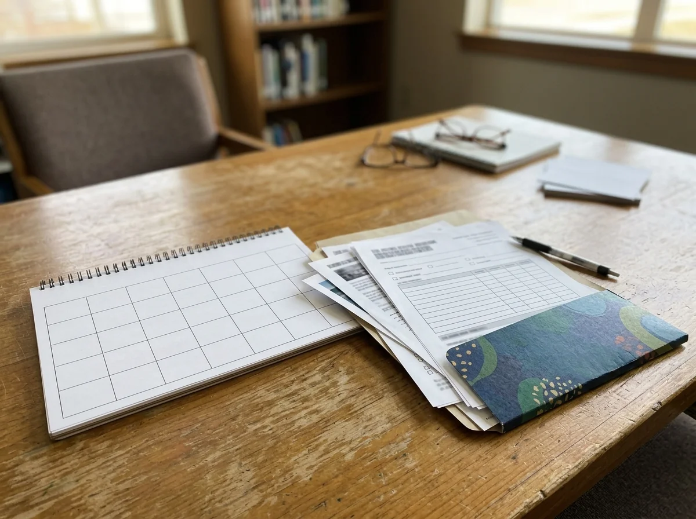
A sunlit desk near an open window overlooking green summer trees, with a planner open to mid-year.
Open full image: Junedays-months · days-months-2-usage-scene-2
A clean workspace with autumn leaves visible outside, notebooks, and folders prepared for early autumn.
Open full image: Septemberdays-months · days-months-2-usage-scene-3
A warm interior workspace with winter light, a closed planner, and a warm ceramic mug.
Open full image: Decemberdays-months · days-months-2-usage-scene-4
A university lecture desk with textbooks, a syllabus binder, and study schedule materials.
Open full image: Academic Yeardays-months · days-months-2-usage-scene-5
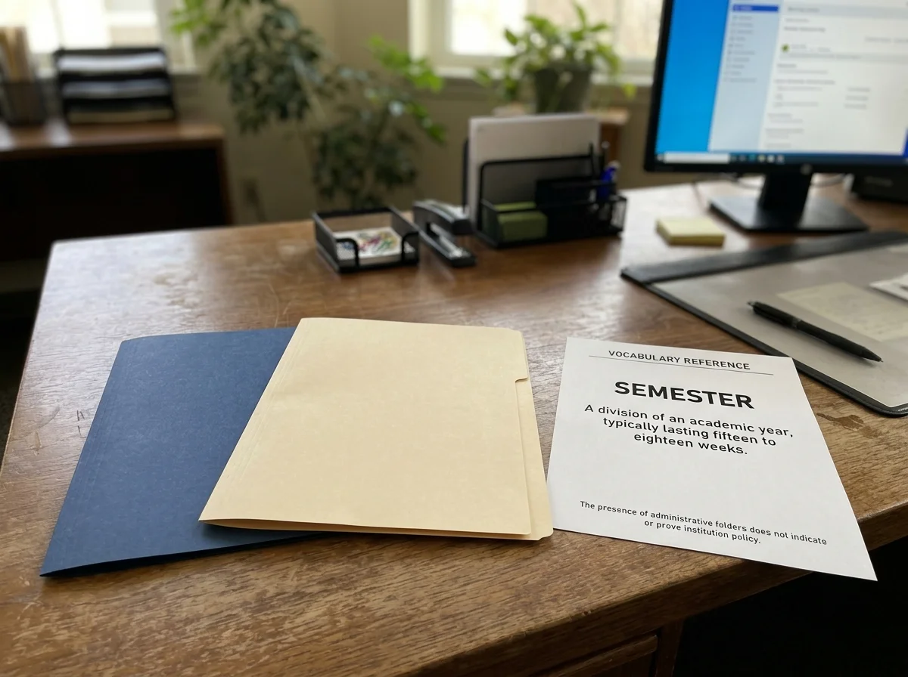
A student study table with course modules, a binder divided into sections, and note cards.
Open full image: Semesterdays-months · days-months-3-usage-scene-1
A desk organizer holding today's task checklist on a clipboard with a pen resting on top.
Open full image: Todaydays-months · days-months-3-usage-scene-2
An open seven-day weekly layout planner showing daily sections with neat handwritten notes.
Open full image: This Weekdays-months · days-months-3-usage-scene-3
A monthly calendar grid on a desktop stand with days organized in rows and columns.
Open full image: This Monthdays-months · days-months-3-usage-scene-4
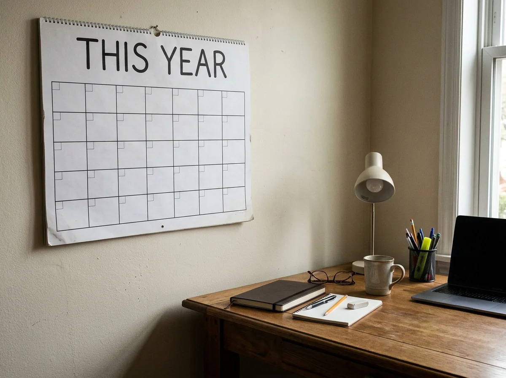
A full annual twelve-month overview wall chart mounted neatly above a workspace desk.
Open full image: This Yeardays-months · days-months-3-usage-scene-5
A planner entry open beside a clock and a visitor badge on a reception counter.
Open full image: Appointmentdays-months · days-months-4-usage-scene-1
A leather-bound personal diary with an attached ribbon bookmark and a fountain pen on a wooden table.
Open full image: Diarydays-months · days-months-4-usage-scene-2
A clean desktop organizer with a neat reminder card resting beside a wristwatch and keys.
Open full image: Reminder